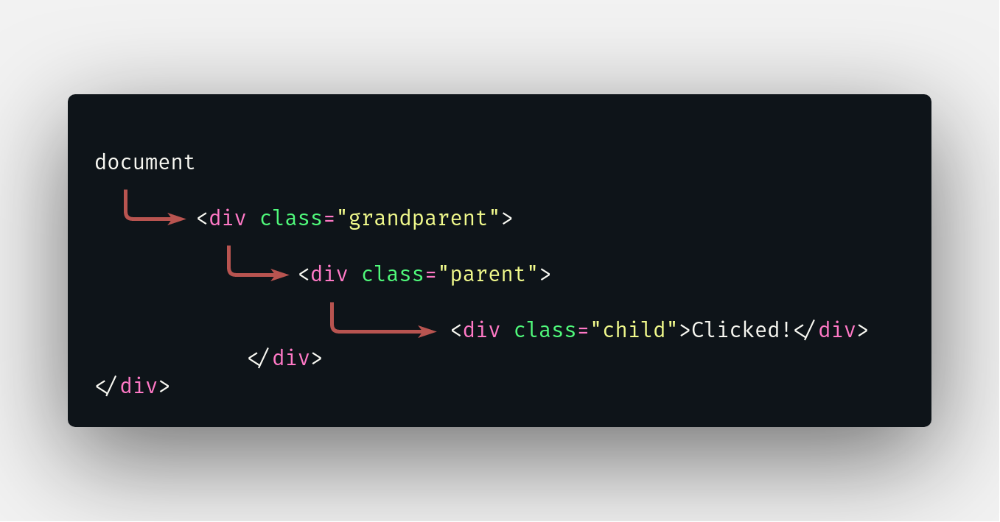

O que é um Event Listener?
Os eventos são basicamente um conjunto de ações que são realizadas em um determinado elemento da página web, seja ele um texto, uma imagem, ou uma div. Muitas das interações do usuário com o conteúdo do seu site podem ser consideradas eventos.
Por exemplo, no botão ao lado estamos adicionando um event listener para ouvir quando o botão "Shake It!" for clicado. E assim que o evento for disparado (quando o botão for clicado), então o conjunto de ações dentro da função que foi passada como parâmetro será efetuado.

Como usar Event Listeners?
No JavaScript há várias maneiras de adicionar um event listener à um elemento:
-
Atributo de manipulação de eventos dentro do HTML

Repare que no código acima, a função "shakeCard()" está sendo chamada diretamente dentro do elemento HTML. Este tipo de chamada é considerada mal prática, pois a longo prazo a mistura de manipulação de eventos dentro do html pode prejudicar a manutenção do código.
Além disso, este método de captura de eventos pode causar falhas durante o carregamento da página, se o elemento carregar antes que seu código em javascript e o usuário tentar interagir com o elemento, um erro de referencia será gerado.
É importante notar que podemos atribuir as propriedades de manipulação de eventos, como "onClick()", em um elemento através do javascript, resolvendo assim o problema relacionado a manutenção do código. No entanto, o elemento ainda estaria limitado há apenas uma função por evento.
Obs: Os atributos de manipulação de eventos disponibilizados pelo HTML não suportam mais de uma função sendo chamada. -
Método HTML DOM addEventListener()
O método addEventListener() pode ser usado em qualquer elemento no DOM. Leva como parâmetro o evento que deve ser ouvido, uma função a ser chamada sempre que o evento for disparado e a forma de propagação no qual o evento vai ser disparado.
Diferente dos manipuadores de eventos do HTML, o addEventListener() aceita qualquer número de manipuladores de eventos, podendo ser adicionado a um único elemento sem sobrescrever os manipuladores de eventos existentes.Como podemos ver na imagem acima, o "elementoQualquer" está recebendo dois event listeners "click", e contanto que as funções passadas como argumento sejam diferentes, ambas serão disparadas quando o elemento for clicado. Alguns do eventos mais usados são: click, dblclick, mousedown, keydown, keypress, keyup, etc...
O segundo argumento a ser passado é a prória função que deve ser executada quando o evento ocorrer, essa função é chamada de callback, pois ela é passada como argumento dentro de outra função.
Essa função pode receber um argumento passado pelo EventListener chamado evento, que nada mais é que o objeto que representa o evento em si. Eventos podem representar desde interações básicas do usuário (cliques, rolagem da página...) até notificações automáticas de novidades no DOM.
O terceiro argumento "useCapture", pode receber como valor um booleano (true ou false) ou um objeto onde serão passadas as configurações para execução da função.
Quando passamos um valor booleano, estamos declarando quando a função passada como parâmetro será executada, por exemplo:Se possuirmos três divs chamadas grandparent, parent e child respectivamente, cada uma com um event listener de click.
Ao clicarmos no elemento filho, o DOM será percorrido uma primeira vez até encontrar o elemento no qual o evento aconteceu, a função será executada, e o DOM será percorrido novamente, dessa vez, do elemento clicado até o começo do documento.
Quando usamos true ou false como parâmetros, estamos dizendo em qual dessas voltas pelo DOM a função deverá ser executada. Sendo false a primeira volta, chamada de Capture Phase, e true a segunda volta, chamada de Bubble Phase.
Capture Phase
Como podemos ver na imagem ao lado, quando o elemento é clicado o evento começa a percorrer a árvore do DOM elemento por elemento, está é primeira volta. Neste caso, o elemento clicado foi o child, e somente quando chegar nele é que a volta terminará.

Se os elementos pais tiverem event listeners do mesmo tipo do child, no caso, evento "click", então será checado o valor booleano passado no método addEventListener(). Se o valor for false, então o evento relacionado ao elemento pai será executado antes do evento do elemento filho.
Bubble Phase
Assim que a primeira volta é terminada, a função do elemento clicado é executado, e o DOM é percorrido elemento por elemento uma segunda vez. Neste caso, a volta só vai terminar quando o último elemento, document for verificado.
Se os elementos pais tiverem event listeners do mesmo tipo do child, no caso, evento "click", então será checado o valor booleano passado no método addEventListener(). Se o valor for true, então o evento relacionado ao elemento pai será executado depois do evento do elemento filho.
Mas e se eu não quiser que o evento do elemento pai ocorra?
Se você quiser por exemplo, impedir que um evento de a volta toda no DOM ativando todos os event listeners que cumprirem os requisitos. Para isso existe a função "event.stopPropagation", onde "event" é o argumento passado na função de callback.
Esse método vai parar imediatamente a propagação do capture e do bubling.